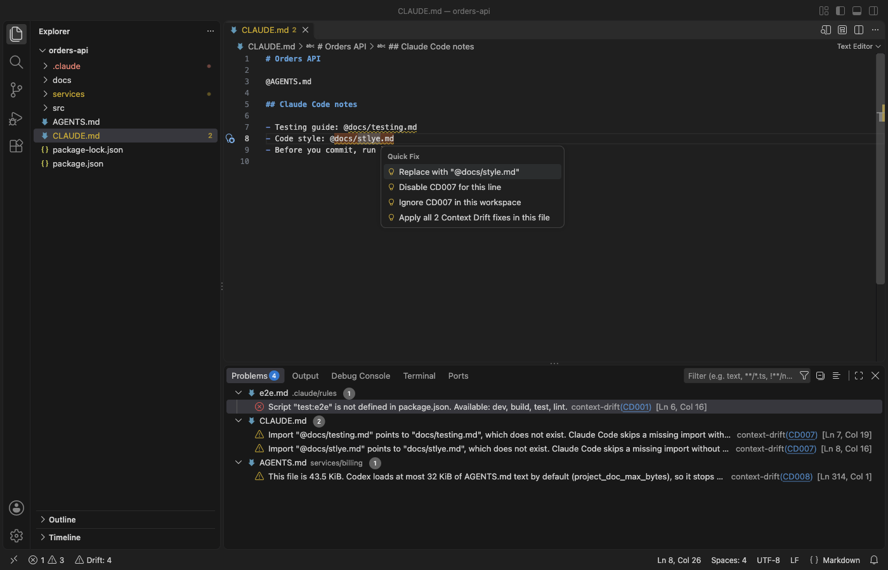

Open files in VS Code and Cursor / Developer files
Find the @imports in CLAUDE.md that load nothing
Claude Code reads @path lines in CLAUDE.md and CLAUDE.local.md as imports, and Gemini CLI does the same in GEMINI.md. When the file is not there, for example after a rename, both tools skip the import without a warning, so the agent never sees those rules. Context Drift checks every import against the repo in VS Code and marks each missing one in the editor and the Problems panel. A quick fix offers the file when the repo has exactly one with that name, or a close spelling in the same folder. Zovo Pro (USD 19 once) adds a workspace report, a check of a folder of repos and a sync of agent files from AGENTS.md, with 3 free tries each.
Free, MIT license. Extension ID zovo.context-drift, version 0.3.1. Needs VS Code 1.90.0 or newer.

Steps in VS Code
- Install Context Drift from the Marketplace, or press Ctrl+P (Cmd+P on macOS) and run
ext install zovo.context-drift. - Open the folder that holds your
CLAUDE.mdorGEMINI.md. Context Drift checks the instruction files when the folder opens and when you edit or save them. - Look for the warnings with the rule id CD007 in the Problems panel. Each one names the import, the path it points to and says that the file does not exist.
- Put the cursor on the underlined import and press Ctrl+. (Cmd+. on macOS). Pick the "Replace with" fix when one is offered. With two or more fixes in the file, "Apply all N Context Drift fixes in this file" applies them in one edit.
- When there is no fix, correct the path by hand or remove the import. Paths are relative to the file that imports them.
- Run "Context Drift: Check Workspace" from the Command Palette to check every instruction file again.
Where Zovo Pro saves time
Every check, the quick fixes, the Drift: N count in the status bar and the command line check are free. Context Drift runs locally, with no network and no account. Besides imports, it flags scripts, make targets and paths that no longer exist, the wrong package manager and old Node, Python or Go versions.
A common setup keeps the rules in AGENTS.md and makes CLAUDE.md import it, so every agent reads the same text. Sync Agent Files from AGENTS.md writes that setup for you. CLAUDE.md and GEMINI.md get the line @AGENTS.md, and Copilot, Cursor, Windsurf and Cline get a copy with a header. You pick the files first, and a file you wrote by hand is never changed. The other Pro tools are Drift Report, with every finding of the workspace in one Markdown file, and Check a Folder of Repos.
With Sync Agent Files from AGENTS.md (Zovo Pro)
- Right-click the
AGENTS.mdin the Explorer and pick "Zovo Pro: Sync Agent Files from AGENTS.md", or run "Context Drift: Sync Agent Files from AGENTS.md (Pro)" from the Command Palette. - Pick the files to create or update. A hand-written
CLAUDE.mdis skipped, with a note to add the line@AGENTS.mdyourself. - Run it again after you edit
AGENTS.mdto update the copies it wrote. A try counts only when a file is written.
Sync Agent Files from AGENTS.md works 3 times on your computer before it asks for a license, and a try counts only when you get a result. Opening a file shows no popup and no countdown.
Zovo Pro costs USD 19 once. It is not a subscription, and it turns on the Pro tools in every Zovo extension, not only Context Drift. After a card payment (Stripe) your license key shows on the next page. In VS Code, run "Zovo Pro: Enter Zovo Pro license key" from the Command Palette and paste it. The key is checked on your computer, with no network call. With GitHub Sponsors, pick the "$19 one time" tier, then run "Zovo Pro: I already paid: unlock with GitHub Sponsors" and sign in with the same GitHub account. With PayPal, send USD 19 with "Zovo Pro" in the note and the key comes by email within a day.
A team of 5: USD 59 once, by card or by PayPal. Every rule and every Pro tool is on the Zovo Pro page.
Steps in Cursor, Windsurf or VSCodium
- Open the Extensions view with Ctrl+Shift+X (Cmd+Shift+X on macOS).
- Search for
zovo.context-driftand click Install. Cursor, Windsurf and VSCodium install from Open VSX, where it is published aszovo/context-drift. - If your editor has no gallery, download the .vsix from the Open VSX page and run "Extensions: Install from VSIX...".
- Then use it the same way as in VS Code.
What Context Drift handles
@pathimports inCLAUDE.md,CLAUDE.local.mdandGEMINI.md.- Imports with a file extension such as
.mdor.json, and imports that start with./or../. - Missing scripts and paths in
.claude/rulesfiles,AGENTS.md, Cursor, Copilot and Windsurf rule files.
What it does not do
- Imports from your home folder (
@~/...) and absolute paths are not checked, because they differ per computer. - Handles such as
@alice, scoped packages such as@types/node, code spans, code blocks and gitignored files are left alone. - It checks that the imported file exists, not what is in it.
- Files over 1 MB and lines over 4,000 characters are not checked.
Other options
- A check by hand. Open every
@pathinCLAUDE.mdonce after a rename. Free, but easy to forget after the next refactor. - agnix. A linter for the format of agent files (frontmatter, rule schemas, hook and MCP config). It does not compare the files with your repo, so the two tools fit together.
Install counts and Open VSX status were checked on 13 November 2026. Descriptions in quotes are the extensions' own.
Questions
Why does Claude Code not warn about a missing import?
It skips an import it cannot find and goes on. That is why the rules in it can be missing for weeks without anyone noticing.
Does it check GEMINI.md too?
Yes. Gemini CLI reads @path imports in GEMINI.md the same way, and the same check runs there.
Can I run the check in CI?
Yes. The same engine runs from the command line and can print GitHub Actions annotations. The README of the extension shows the setup.
Does it work in Cursor or Windsurf?
Yes. Cursor, Windsurf and VSCodium install extensions from Open VSX. Search for the extension in their Extensions view and install it there.
More about Context Drift
Read the Context Drift page for every feature and setting, or the source code on GitHub.
Related guides
- Lint AGENTS.md and CLAUDE.md against your repo
- See where Codex stops reading a long AGENTS.md
- Read a HAR file offline in VS Code
- Read your Claude Code history in VS Code
Support this work
If this extension saves you time, you can support the work on GitHub Sponsors. Monthly tiers start at $5, and one-time tiers start at $15. Sponsorship is optional, and the tool works the same without it.
Need your format supported?
Open a format request with a sample file, and I reply there whether it can be done. For USD 299 once, through this GitHub Sponsors tier, I add your file format or a missing feature to this extension, with tests, within 7 days.